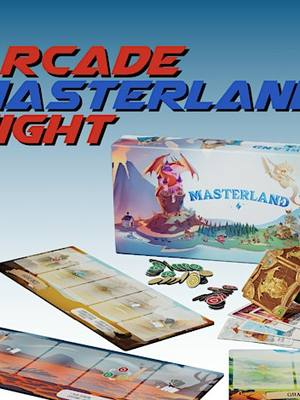
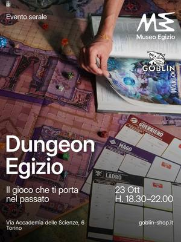

Tornei e serate di giochi a Torino
Tornei di carte e scacchi, serate di giochi da tavolo, giochi di ruolo e cacce al tesoro a Torino e dintorni.
Cerca tutti i workshop12 attività in arrivo · aggiornato il 22 ottobre 2026
- gio22ottGiochiGiochi in biblioteca: impariamo la damagiovedì 22 ottobre, 16:30–18:00Bra (CN) · Gratiscon Biblioteca civica di Bra con il Circolo Damistico Bartoloni

gio22ottGiochiMasterland Night: gioco con gli autorigiovedì 22 ottobre, 20:00–23:30Lingotto (TO) · Gratiscon Arcade
ven23ottGiochiDungeon Egizio: D&D al museovenerdì 23 ottobre, 18:30–22:00Centro (TO) · 6 €con Museo Egizio con Goblin- ven23ottGiochiGame Night: tre giochi da tavolo a puntivenerdì 23 ottobre, 20:00–23:30Lingotto (TO) · Gratiscon Arcade
- dom25ottGiochiGioco di ruolo dal vivo: caccia al killerdomenica 25 ottobre, 10:00–18:00Chivasso (TO) · Gratiscon Revelsh Blind Beholders
 mer28ottGiochiTorneo di Burraco: sfida a coppiemercoledì 28 ottobre, 19:00Vanchiglietta (TO)con Bocciofila Vanchiglietta
mer28ottGiochiTorneo di Burraco: sfida a coppiemercoledì 28 ottobre, 19:00Vanchiglietta (TO)con Bocciofila Vanchiglietta mer28ottGiochiMagic Night: torneo Commandermercoledì 28 ottobre, 20:30–23:30Lingotto (TO) · Gratiscon Arcade
mer28ottGiochiMagic Night: torneo Commandermercoledì 28 ottobre, 20:30–23:30Lingotto (TO) · Gratiscon Arcade gio29ottGiochiChess Night: torneo di scacchigiovedì 29 ottobre, 19:30–23:00Lingotto (TO) · Gratiscon Arcade
gio29ottGiochiChess Night: torneo di scacchigiovedì 29 ottobre, 19:30–23:00Lingotto (TO) · Gratiscon Arcade sab31ottGiochiGhost Exploration: caccia al tesorosabato 31 ottobre, 18:00–22:00Aurora (TO) · da 29 €con Minime Differenze
sab31ottGiochiGhost Exploration: caccia al tesorosabato 31 ottobre, 18:00–22:00Aurora (TO) · da 29 €con Minime Differenze sab7novGiochiHackerare Monopoly: la città in giocosabato 7 novembre, 10:30–13:00San Salvario (TO) · Gratiscon Urban Desires 2026 con Collettivo Zeroscena
sab7novGiochiHackerare Monopoly: la città in giocosabato 7 novembre, 10:30–13:00San Salvario (TO) · Gratiscon Urban Desires 2026 con Collettivo Zeroscena ven13novGiochiCena con delitto: Halloweenvenerdì 13 novembre, 20:00–23:30Lingotto (TO) · 20 €con Arcade
ven13novGiochiCena con delitto: Halloweenvenerdì 13 novembre, 20:00–23:30Lingotto (TO) · 20 €con Arcade- datada confermareAltroCascina Roccafranca: corsi della stagioneData da confermareMirafiori (TO)con Cascina Roccafranca